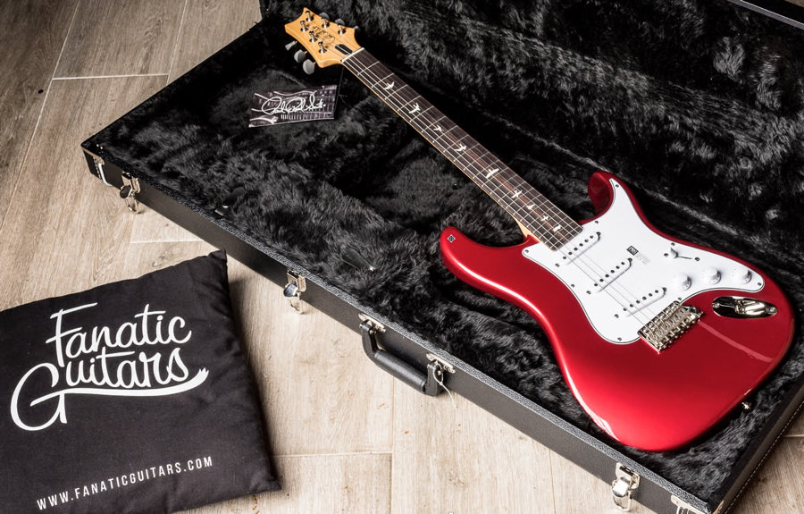
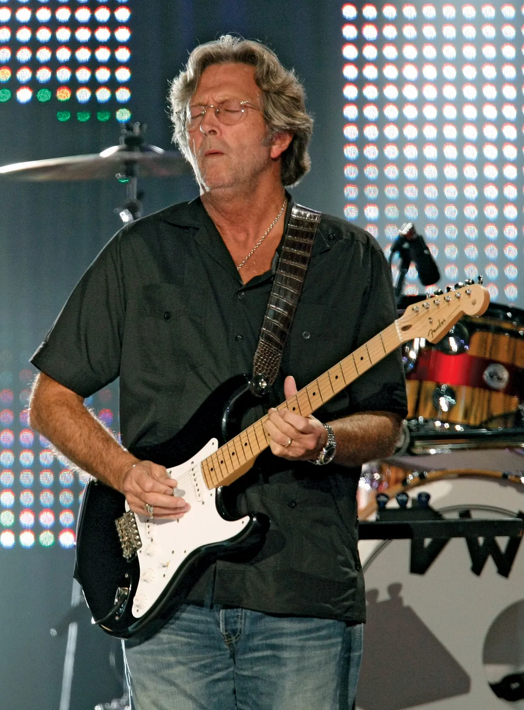

Es en 1920 cuando el ingeniero Lloyd Loard crea la primera guitarra eléctrica en Estados Unidos. Trabajaba para la gran empresa de fabricación de instrumentos Gibson. Su invención fue posible gracias a la aparición del micrófono de bobina móvil a principios de siglo.

La “Frying Pan”, considerada la primera guitarra eléctrica por historiadores de la música, fue un auténtico hito. Fue inventada por George Beauchamp y Adolph Rickenbacker en 1931, su nombre, que se traduce como “sartén” en español, refleja su forma única (también similar a un banjo), con un cuerpo circular y un largo mástil. Es una guitarra de regazo que se toca colocando la guitarra horizontalmente sobre los muslos del músico, quien utiliza una barra de metal o un “slide” para pulsar las cuerdas, mientras que con la otra mano raspa las cuerdas para crear un sonido único.
Podemos dividir la guitarra eléctrica en tres partes: cuerpo, mástil y pala. Vamos a fijarnos en estas partes y ver qué elementos contiene cada una:
La parte más característica de una guitarra y lo que marca la diferencia a primera vista entre ellas. Mientras que las acústicas o clásicas son huecas para generar sonido, la mayoría de las eléctricas son de madera sólida (aunque existen algunos modelos semihuecos y huecos). Entre las formas más famosas se encuentran la Stratocaster, la Telecaster o la Les Paul. Pero veamos qué contiene el cuerpo de una guitarra eléctrica.
Como ya hemos dicho, las eléctricas no necesitan de un cuerpo hueco para generar sonido, ya que cuentan con pastillas. Son elementos electrónicos que captan las vibraciones de las cuerdas metálicas gracias a un núcleo magnético bobinado y generan una señal eléctrica que es la que se envía al amplificador. Existen varios tipos de pastillas, las principales son:
Es una pieza normalmente de plástico y que tiene diferentes formas y acabados según el modelo. Se coloca sobre la madera en la parte que golpea la mano con la púa y sirve para no rayar la madera. Es también una opción estética y no todas las guitarras lo llevan.
Son pequeños botones que girándolos incrementan o disminuyen la cantidad de señal (volumen) y brillo (tono). Pueden ser generales (master) o influír en una pastilla específica.
Es una pieza normalmente de metal y que se compone de diferentes bloques (silletas), también de metal, donde se fijan cada una de las cuerdas.
Se compone de un trozo de madera rectangular y alargado que en su interior está recorrido por el alma. La cara más plana es lo que llamamos diapasón, y sobre este van las cuerdas y los trastes.
Se conoce así tanto a la pequeña varilla de metal que divide el diapasón en rectángulos de diferente longitud, como esos mismos rectángulos. Es decir, la superficie entre varillas también se denomina traste y se suelen numerar del 1 al 20, 21, 22, etc. dependiendo de la cantidad.
Para facilitar el reconocimiento del número del traste, se suelen poner unas marcas (inlays) en determinadas posiciones, normalmente las 3, 5, 7, 9, 12, 15, 17, 19 y 21. Lo más común es que se marque con puntos, pero hay sitio para la creatividad aquí: pueden ser líneas, rectángulos, rombos, calaveras, pájaros…
Diríamos que es la parte superior de la guitarra. Es importante porque es donde afinaremos y además donde suele ir escrita la marca de la guitarra. Las hay de muy diversas formas, pero los dos grupos principales son las que contienen todas las clavijas en línea (Strato, Tele) o las que dividen las clavijas tanto en la parte superior como en la inferior de la pala (Les Paul).
Son accesorios generálmente metálicos que sirven para enrollar y tensar las cuerdas. Es decir, para afinar.
Es una pequeña pieza que puede estar hecha de distintos materiales (plástico, tusq, hueso...). Se coloca en la unión del mástil y sirve para elevar las cuerdas y que así no rocen con el diapasón.
Es una pequeña abertura que permite acceder al alma para ajustarla. En otros tipos de guitarra se puede encontrar justo al otro lado del mástil. El Alma (Truss Road) es una varilla de metal que recorre todo el mástil y lo mantiene fijo evitando que se doble por la tensión de las cuerdas.
Los tipos principales son:
La Fender Telecaster, la primera guitarra eléctrica que se fabricó en serie, define el sonido de la música country. Si quieres hacerte una idea del tono estereotípico de la Telecaster, echa un vistazo al country anterior a los 80. Pero claro, no te dejes llevar por los estereotipos, la Telecaster es en realidad un instrumento bastante versátil. Músicos muy alejados del country la han utilizado y la siguen utilizando.
>Lanzada en 1954 por Fender, la Fender Stratocaster es un modelo de guitarra eléctrica ampliamente reconocido. La Stratocaster (a menudo conocida simplemente como "strat") es una guitarra diversa y se ha utilizado con eficacia en una gran variedad de géneros (country, rock, pop, folk, soul, blues y R&B).
Este tipo de guitarra también suele tener un trémolo. Un trémolo es un dispositivo que te permite cambiar el tono de una guitarra moviendo la palanca hacia arriba (elevar el tono) o hacia abajo (bajar el tono). Sin embargo, este tipo de trémolo tiende a desafinar la guitarra cuando se usa.
Comúnmente asociada con el rock clásico, la Les Paul hace honor a su reputación de ser una “rock and roll machine”l. Sin embargo, la guitarra es capaz de mucho más. Algo que muchos no conocen sobre la Les Paul es que tiene un tono limpio magnífico. Les Paul, el famoso inventor y el que dio nombre a la Les Paul, la usó ampliamente en su carrera. Y era un músico de jazz. Otro ejemplo fuera del rock: Bob Marley también usó una Les Paul.
La principal diferencia entre las dos es que para muchos el estilo de cuerpo Flying V es incómodo y extraño. De todas formas, a su favor hay que decir que se accede a las notas más altas del mástil muy comodamente. Tonalmente, estas guitarras son muy similares. Ambas tienen ese tono característico de Gibson, lo que las hace ideales para el rock y el metal. Dependiendo de las pastillas, pueden cubrir tanto terreno como la Les Paul, pero quizá sin ese punto “tradicional”.
Este estilo de cuerpo incluye tres instrumentos principales:
Si bien existen diferencias definidas entre ellas, todas las guitarras offset generalmente tienen un sonido "tintineante". Cuando decimos tintineo, nos referimos a brillante y claro con una respuesta sutil de medios y graves. Estas guitarras también se adaptan bien al trabajo rítmico dependiendo de cómo se ajusten las perillas de tono. Este tono las ha convertido en la elegida por una gran variedad de músicos alternativos. Muchas de las bandas de grunge de la década de 1990 adoptaron inicialmente las guitarras offset de Fender porque en ese momento eran increíblemente asequibles, pero se quedaron con ellas debido a su tono claro. En su día repasamos por ejemplo las guitarras de Kurt Cobain.
(James Marshall Hendrix; Seattle, Estados Unidos, 1942 - Londres, 1970) Guitarrista estadounidense de rock. Según la discografía oficial, tiene unos veinte discos editados, si bien tan sólo publicó tres en vida: Are you Experienced? (1967), Bold as Love (1967) y Electric Ladyland (1968). Sin embargo, su genio y originalidad han perdurado de tal modo que medio siglo después de su fallecimiento sigue siendo el referente principal de los grandes guitarristas. Desarrolló la técnica y los efectos de la guitarra eléctrica hasta dotarla de una entidad propia, mediante la saturación de sonido en los amplificadores y el uso del pedal wah-wah para generar efectos sonoros.

Eric Clapton, a quien sus fans llaman «God», es hoy en día el guitarrista de rock y blues más famoso del mundo. Sigue todavía activo, tras 50 años encima de los escenarios. Este británico ha ido evolucionando dentro de los estilos que acabamos de mencionar, el blues y el rock. Es un gran solista y un melodista de renombre; básicamente, sabe hacer de todo.
Saul Hudson, más conocido como Slash, es uno de los músicos más icónicos de todos los tiempos. Saltó a la fama como guitarrista principal de la banda de hard rock Guns N’ Roses y lleva décadas cautivando a fans de todo el mundo. Desde sus icónicos solos en algunas de las canciones más conocidas de Guns N’ Roses, hasta su trabajo en otras bandas como Velvet Revolver, Slash’s Snakepit y Slash’s Blue Ball, Slash ha demostrado una y otra vez que es un maestro de su oficio. En este artículo, echaremos un vistazo a la técnica de guitarra de Slash y a su historia.

(Kurt Donald Cobain; Aberdeen, 1967 - Seattle, 1994) Compositor y cantante de rock estadounidense. Fue el fundador y principal miembro de Nirvana, mítica banda cuya breve trayectoria se halla indisolublemente unida al surgimiento del grunge a principios de los años 90.

En música y teoría musical, un acorde consiste en un conjunto de dos o más notas diferentes y que constituyen una unidad armónica. En determinados contextos, un acorde también puede ser percibido como tal aunque no suenen todas sus notas.